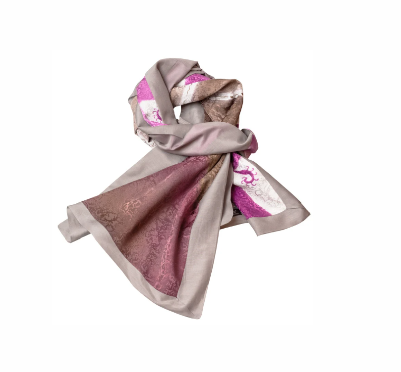

Weekly Talks · 02화
매체론 — 스카프
목을 감싸는 방식에 담긴 것

매체론 — 스카프
목은 몸에서 방어가 가장 약한 자리입니다
스카프를 두른 날과 두르지 않은 날, 마음 상태가 다릅니다. 우연이 아닙니다.
느슨하게 늘어뜨리는지, 목에 바짝 붙이는지, 단단히 매듭을 짓는지 — 감싸는 방식에 지금의 긴장도가 드러납니다.
목주름을 가리려고 한다고 말씀하시지만, 왜 하필 그 방식으로 가리는지는 다른 이야기입니다. 이 회차에서 그 차이를 읽습니다.
이 회차에서 다루는 것
- 스카프 착용 유형 5가지와 심리 대응
- 목을 감싸는 행위의 방어 기제
- S.C.T.D로 읽는 스카프 — 실루엣 · 색 · 소재 · 매듭 디테일
- 목선 고민을 심리의 언어로 다시 보기
이런 분께 권합니다
- ·스카프를 사놓고 서랍에 넣어두신 분
- ·목을 드러내는 것이 유독 불편한 분
- ·중년 이후 목선 고민이 있으신 분
- ·같은 방식으로만 두르게 되는 분
Weekly Talks 전체 구성
8화 · 각 90분